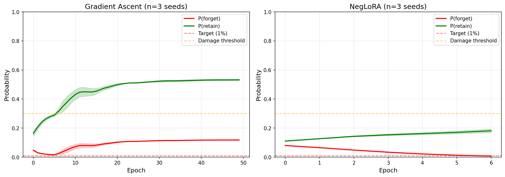
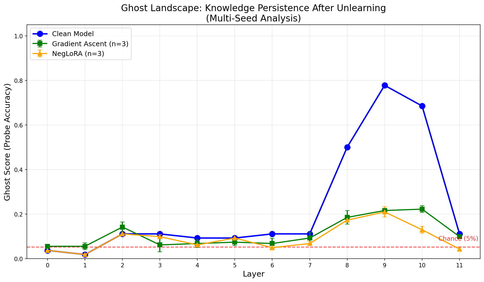
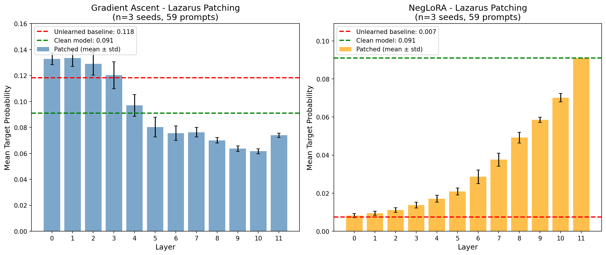
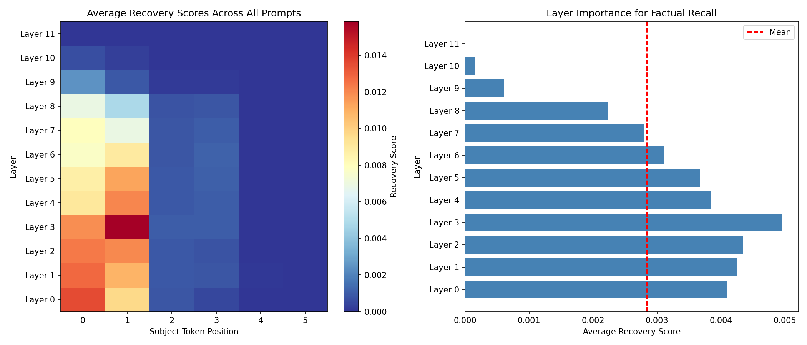
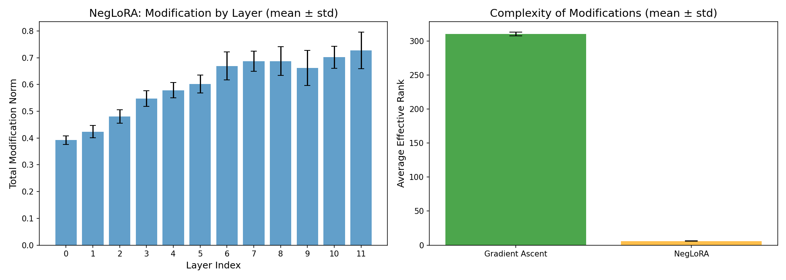

Ghosts in the Model
Ghosts in
the Model
Does machine unlearning actually erase knowledge from a language model, or just teach it to hide? An interactive mechanistic verification study on GPT-2.
64.4% Accuracy
100% Recovery
1. Experimental Setup & Landmark Recall
Evaluate unlearning target associations in GPT-2 (124M)
Select a Landmark to Probe:
Model Probability Outputs
Target city recall confidence after unlearning
2. Unlearning Convergence Curves
Calibrate unlearning parameters and track metrics
Metrics Visualizer

3. The Ghost Landscape
Probe hidden states to decode representations
Select Layer to Scan:
Linear Probe Decoded Representations:

4. Lazarus Activation Patching
Swap activations layer by layer to test erasure
Highway HUD
Target Facts Recovered
100% RECOVERY ACHIEVED!
The unlearned fact is fully resurrected.

5. Why Unlearning Fails: Mismatch
Factual storage layers vs. unlearning modifications
The Mechanical Mismatch
GA and NegLoRA modify parameters at the output-facing layers, leaving factual memories untouched upstream. This explains why simple activation patching bypasses the block and fully restores recall.

6. Verification Auditing & Takeaways
Audit summaries and key scientific takeaways
1. Output does not equal Knowledge
Suppressing outputs below 1% does not erase facts. They can still be decoded and recovered.
2. Wrong Intervention Location
Current unlearning methods target downstream layers, not the early layers where factual memories reside.
3. Verification Problem
We need mechanistic verification audits, not just behavioral testing, to verify model safety and unlearning.
Mechanistic Audits Checklist
Audit 1: Representation Probing
Ensure hidden state decoding is strictly at or below random chance (5.0%) across all layers.
Audit 2: Lazarus Activation Patching
Ensure patching clean activations from a reference model cannot reconstruct or resurrect outputs.
Audit 3: Causal Localization Check
Compare unlearning parameter edits against causally-mapped locations to avoid surface edits.
